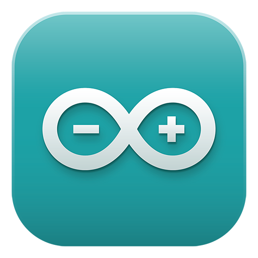
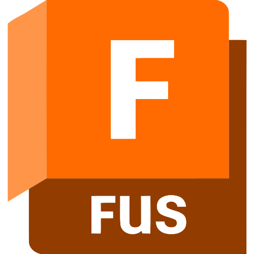
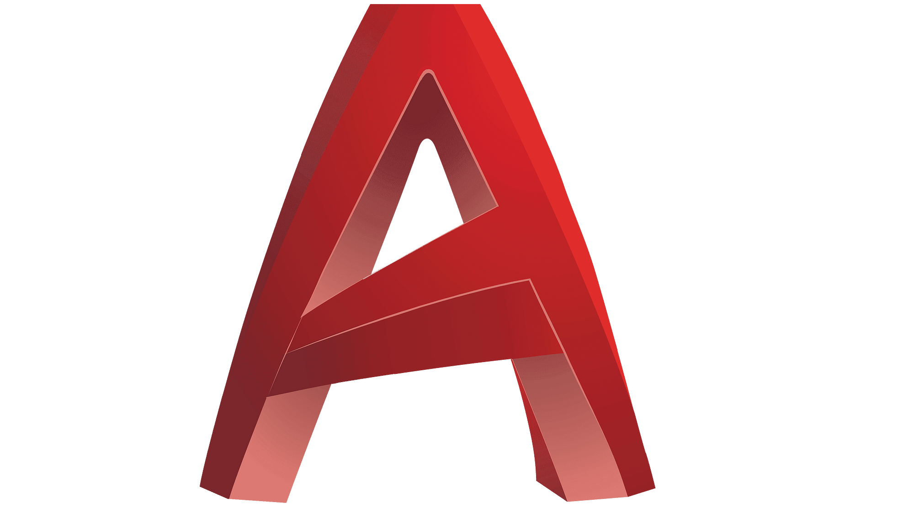
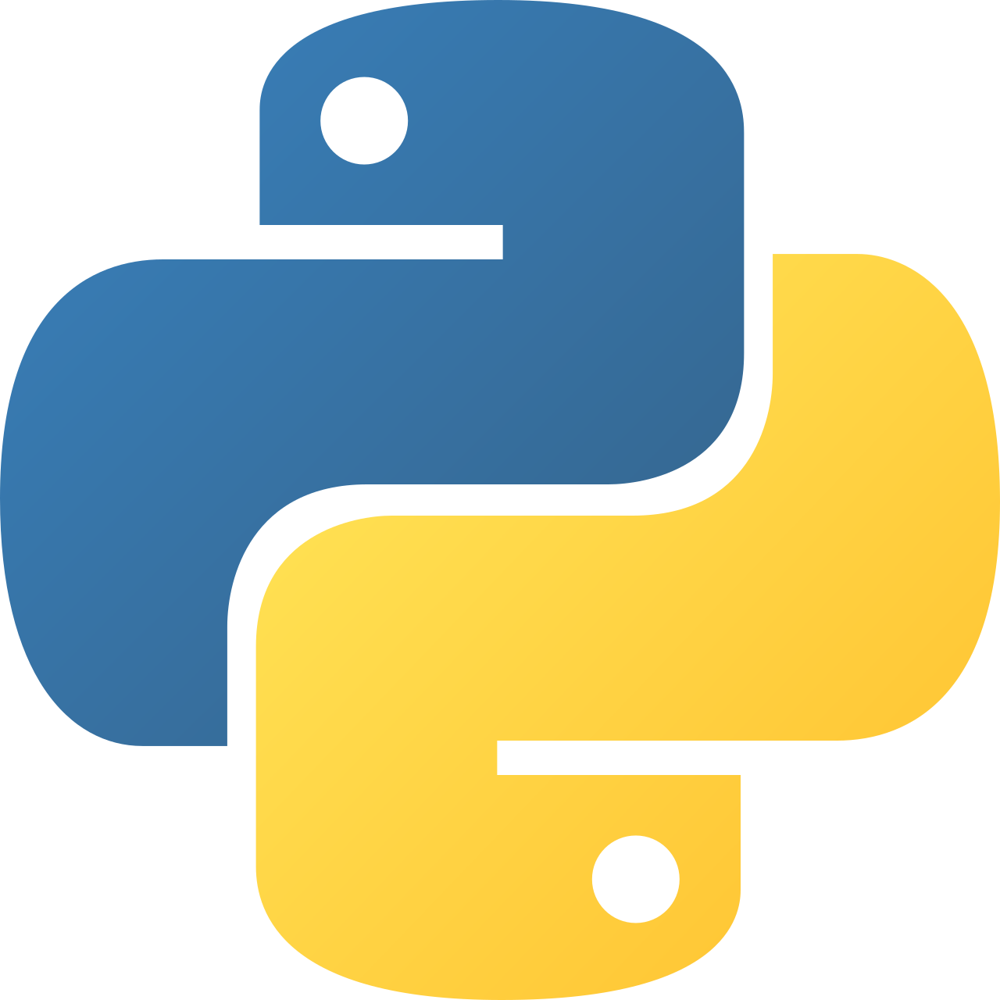
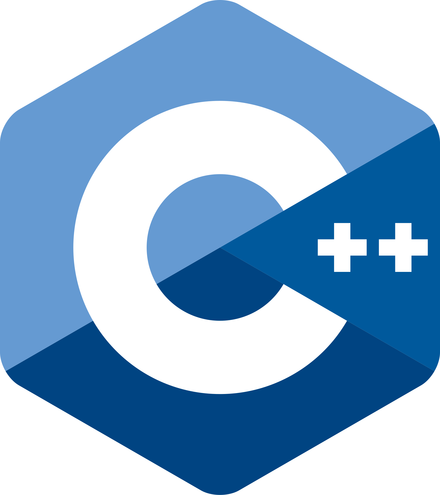
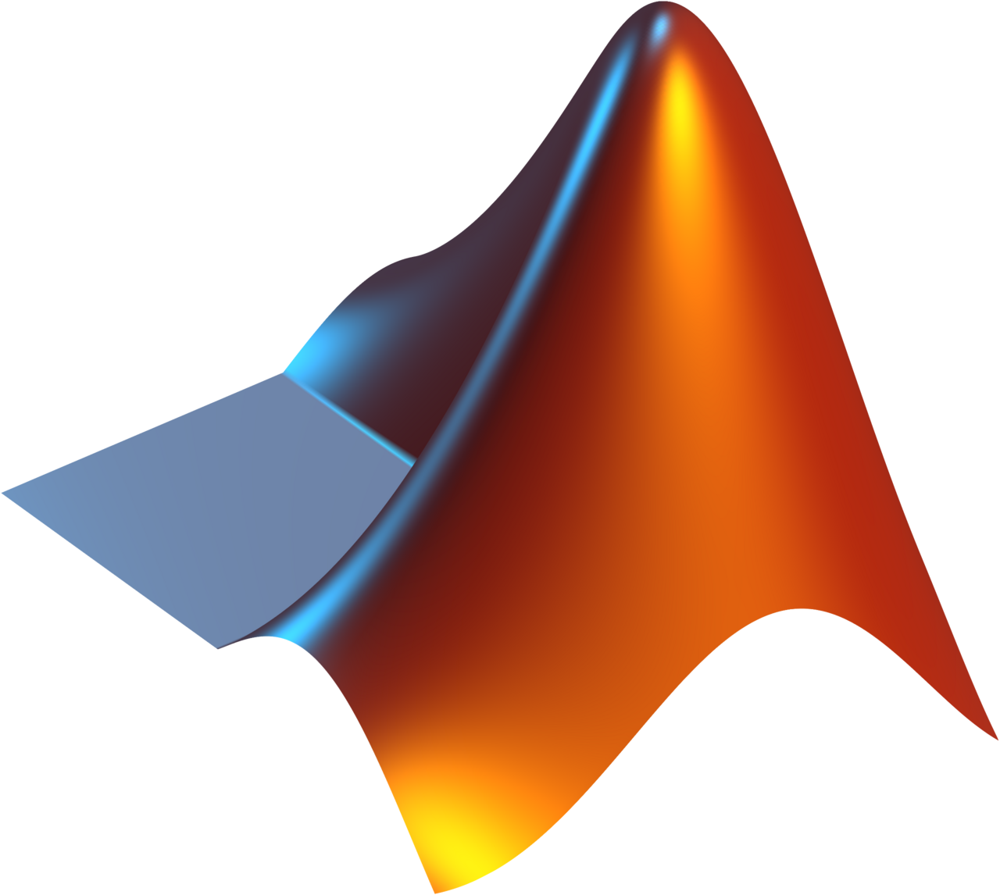
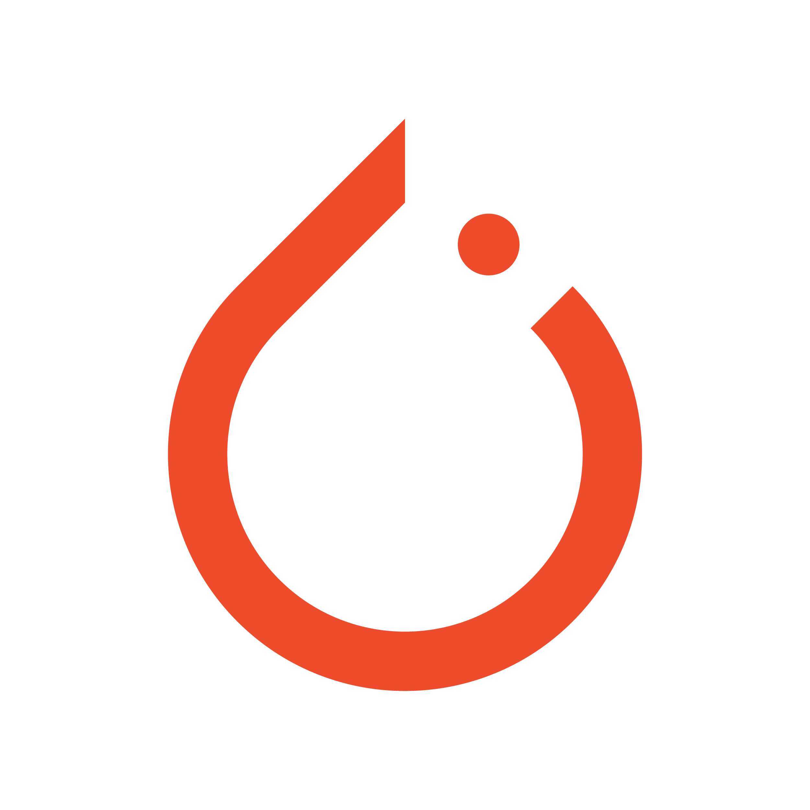
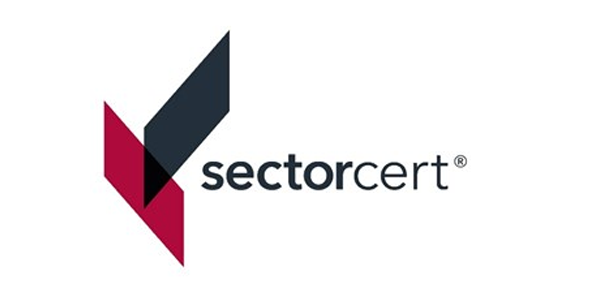

Finding optimal, robust solutions to complex engineering problems.
Stefan Popovski — Mechanical Engineering at the University of Maryland. Based in College Park, MD, originating from Skopje, Macedonia.
View my work →Beyond engineering.
When I'm not solving engineering problems, I explore the world, capturing moments through my camera or phone, carving down ski slopes (in the winter only lol), exercising, or hiking new trails.
Explore my world →01 — About
About me
I am a prospective Mechanical Engineering undergraduate at the University of Maryland, College Park, minoring in Nuclear Engineering (Expected GPA: 4.0). My journey began in Skopje, Macedonia, instilling in me a drive for perfection and resilience.
To me, engineering is more than just math and physics; it is the fundamental process of iterating through critical problems to find the most robust solutions. Through my academic journey and various projects, I've developed a strong foundation in and interest in Reliability and Systems Safety, encompassing mathematical modelling and statistical optimization. This led me to my interest in the field of Probabilistic Risk Assessment, and Fitness-for-Service assessments (FFS), blending the field of predictive computing and physical engineering.
Resume
Your browser can't display the PDF inline. Open ↗
02 — Skills
Skills & Expertise
A comprehensive overview of my technical proficiencies and capabilities, ranging from mechanical design to software development.

Arduino
SOLIDWORKS

Autodesk Inventor

Fusion 360
Ansys

AutoCAD
NI LabVIEW

Python

C++

MATLAB
R

PyTorch
Processing

NDT Level II
Liquid Penetrant Testing & Inspection (EN ISO 9712/SNT-TC-1A)
- EN / MK
Languages
Fluent in English & Macedonian.
03 — Experience
Experience
Highlighting core experiences, internships, and research endeavors that shape my career.
-
Undergraduate Research Assistant
Dr. Amr Baz — The Smart Materials and Structures Research Center
Composite Tire Materials for Waste Energy Harvesting
-
Engineering Intern
TSG Industry Service DOO
Calculated pipeline corrosion rates for Trident Energy's FPSO rig. Assisted in developing the Macedonia-Greece 68km natural gas interconnector. Engineered a Python application utilizing optimization to significantly minimize pipe drop-off waste and project funding.
-
Dr. Zhao Lab: Center for Risk and Reliability
Undergraduate Research Assistant
Implemented a stochastic Genetic Algorithm using PyTorch with Weibull distribution and Monte Carlo sampling to optimize maintenance and predict Mean Time Between Failures for nuclear reactors.
-
Innovation Bowl: High Temperature Heat Flux Sensor
Undergraduate Researcher
Implemented thermoelectric & Seebeck effects for a high-temperature sensor at UMD's IREAP lab. Won 1st Place & $25,000 grand prize (Radiance Technologies Innovation Bowl) for project excellence in product development.
04 — Projects
Projects
Things I've designed, built and analysed. Every sprite here was placed one cell at a time.
-
Aircraft Engine RUL Prediction
Predicting the remaining useful life, in flights, of 100 in-service aircraft engines from the run-to-retirement histories of 260 others. Regime-normalized sensor data, Fisher-score feature selection and a PCA health indicator are done; RUL modelling is next.
-
Smart Piezoelectric Composite Tires (ONR)
Contributing to an Office of Naval Research (ONR) project focused on developing smart composite tires that can harvest energy from vehicle movement and monitor road conditions. Designing and fabricating composite structures with integrated piezoelectric sensors, analyzing their response to various inputs, and developing control systems for energy harvesting applications.
-
Python: Signal Analyzer and Processing
A full GUI program that takes .txt files from LabView and plots the output signals from the piezoelectric sensors and sound level meters of our testing apparatus. It produces Fourier transforms and an overall report, with Rectangular, Hanning, Hamming, Blackman and flat-top windows, plus moving-average, low-pass, band-pass and high-pass filters — saving hours of manual work in MATLAB.
-
Team Project: Over-Terrain Vehicle
Designed and assembled an autonomous OTV utilizing a Vision System to navigate obstacles and extinguish flames. Extensive use of Fusion 360, Kinetics/Kinematics, and fabrication methodologies.
-
Autonomous Solar Panel Tracking System
Currently in progress... Stay tuned for updates.
-
FEA Study on Pedestrian Overpass "Vlajko"
Currently in progress... Stay tuned for updates.
-
Personal Portfolio Website
Designed a responsive, minimal personal portfolio from scratch, with pixel sprites, Work/Life modes, a light/dark theme and English/Macedonian localization. Managed with Git and GitHub.
01 — About
Life Outside Academics
Outside the engineering world, I find joy and fulfillment in photography — capturing landscapes, street scenes, and candid moments wherever I travel. I definitely am by no means professional, but it is a nice creative outlet from the academic rigor.
I'm an avid skier who lives for the adrenaline of fresh powder days, a dedicated runner always chasing new personal records, and a passionate traveler with an insatiable curiosity for new cultures, cuisines, and landscapes. These pursuits keep me balanced, energized, and inspired.
Growing up I was always surrounded by music, and practiced piano for a solid 8 years, which I later threw out the window to teach myself guitar. I still actively play and enjoy it. However, this all stemmed from my love for listening to music and appreciating the artistry behind it. I try to listen to a wide variety of genres, and explore how music evolves through time and culture, while always enjoying the roots of what made the music what it is for me.
- 10+
- Countries visited
- 15+
- Ski resorts
- 500+
- Miles run
- 1000+
- Photos taken
02 — Pursuits
Passions & Pursuits
The activities that fuel my creativity, keep me grounded, and make life an adventure.
Photography
From sweeping landscapes to intimate street scenes, I use photography to document the world around me. I shoot with a focus on natural light, composition, and storytelling.
Skiing
Learning to ski at an early age, I have spent my winters conquering steep slopes and some rough off-piste. I am most confident at high speed on-piste; skiing off-road has been exciting these past couple of seasons.
Travel
I grew up in Macedonia, lived a year in Kuala Lumpur, Malaysia, and have visited a handful of countries in Europe and south-east Asia — always on the lookout for the next adventure.
Running
Running clears my mind and tests my limits. From early morning jogs to longer distance training, it's my daily ritual for staying sharp — physically and mentally.
Reading
Literature has been a big part of my hobbies through middle school, high school, and now university. Favourites include "Crime and Punishment", "Waiting for Godot", "The Stranger", and "Seven Brief Lessons on Physics".
03 — Adventures
Adventures & Memories
Some of the experiences and personal milestones that define who I am beyond the resume.
- 01
Alpine Adventures
From the slopes of the Balkans to the Alps, skiing has taken me to some of the most breathtaking mountain landscapes in Europe. Each season brings new challenges and unforgettable descents.
- 02
Travel Journal
Exploring cities and countryside across multiple continents — from the cobblestone streets of European capitals to the vibrant energy of new destinations. Every journey adds a new chapter.
- 03
Photo Portfolio
Capturing moments that tell stories — golden hour landscapes, architectural details, candid portraits, and the raw beauty of nature. Photography is how I preserve memories.
- 04
Running Goals
Training for personal bests and pushing my endurance limits. Running isn't just exercise — it's meditation, discipline, and the constant pursuit of improvement.
04 — Gallery
Photo Gallery
A collection of moments captured digitally.
No photos yet — add entries to gallery-config.js.
05 — Contact
Let's connect.
Always open for new learning opportunities, collaborations, experiences and connecting with like-minded people. Feel free to reach out.